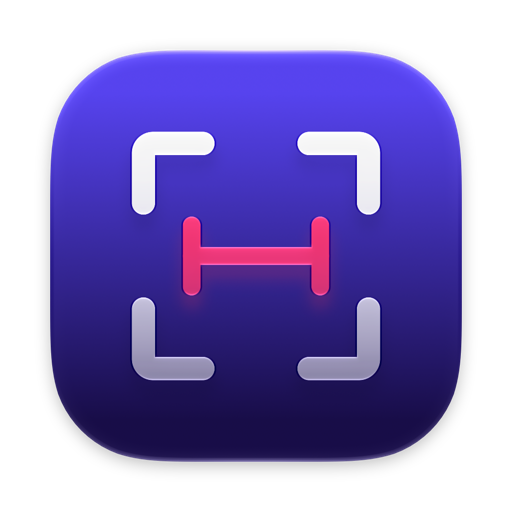

Good morning, Ava
Here’s what’s happening today.
New Project
Active projects24+3 this week
Open tasks12812 due today
Velocity92%+8%

Press ⇧⌘2 and hover. PixelMark finds the edges around your pointer and shows exact sizes in points or pixels. Drag a box and it snaps to the content inside.
Here’s what’s happening today.
PixelMark freezes your screen for a moment and reads its pixels, so it measures anything: websites, apps, designs, images and video.

Lines run from your pointer to the nearest edge in every direction, with the size right beside it. The loupe shows the pixels underneath and their color.

Point at a box and hold Option to see the gap to its neighbors, or to the next edge on screen. Boxes that line up get alignment lines automatically.

Drop guides with H and V to check alignment across the screen. Click to pin a measurement, then keep going.
Adjustable tolerance skips shadows and anti-aliasing, or stops at a single 1 px border. Change it live with [ ].
⌘C copies 320 × 48, CSS width and height, or a SwiftUI .frame.
Points match your design files. Pixels are the real device pixels on a Retina display. Press U to switch.
Measures across all your screens at their native resolution, over full-screen apps and every Space.
Arrow keys nudge the pointer by one pixel (⇧ for ten), so you land exactly where you mean to.
No account, no analytics, no network. The screenshot stays in memory and is gone when you press Esc.
Press ? while measuring to see these any time.
To find edges it has to see the pixels on screen. When you press the shortcut, PixelMark takes one still image of each display, measures against it, and throws it away when you're done. Nothing is recorded, saved or sent anywhere unless you press ⌘S.
Yes. PixelMark is open source under the MIT License, with no trial, account or upsell. If it saves you time, a star on GitHub is appreciated.
PixelSnap inspired it, and it's a great app. PixelMark covers the same core workflow (edge measuring, snapping boxes, spacing, guides and screenshots), adds a loupe with color picking and copy formats for CSS and SwiftUI, and is free to use and change.
Any Mac running macOS 26 Tahoe or later. The app is built for Apple silicon and Intel, and it's signed with a Developer ID and notarized by Apple, so it opens without warnings.
That's the edge tolerance. Press ] to raise it so subtle shadows and gradients are ignored, or [ to lower it so even a faint border counts. The default (12) works for most interfaces.
Clone the repo, run brew install xcodegen and xcodegen generate, then open PixelMark.xcodeproj in Xcode 26 or later and press Run.
Free, open source, and ready in your menu bar a few seconds after you download it.
Download PixelMark